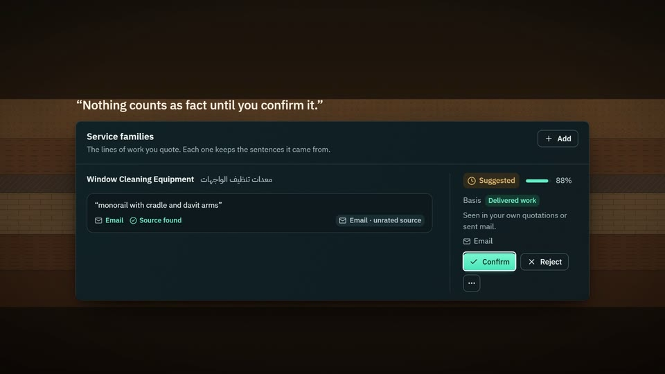
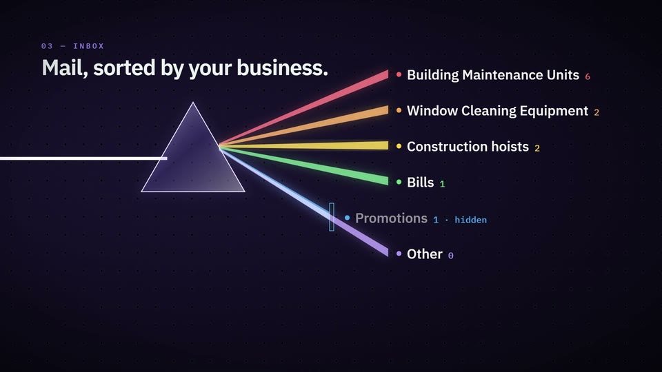
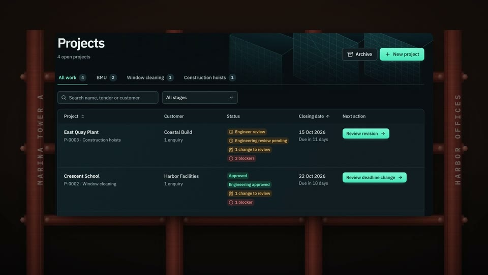
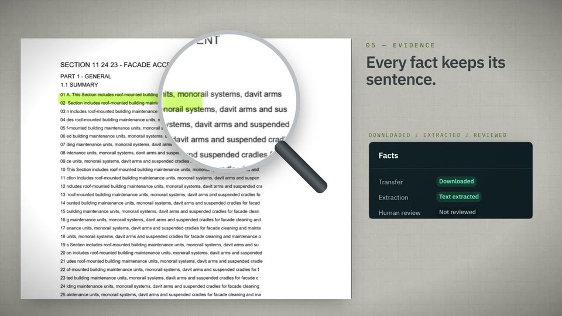
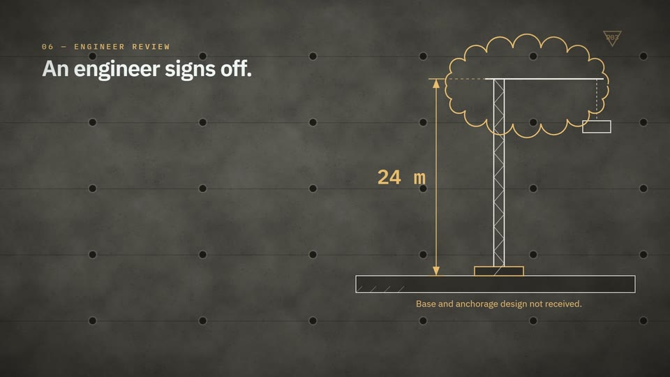
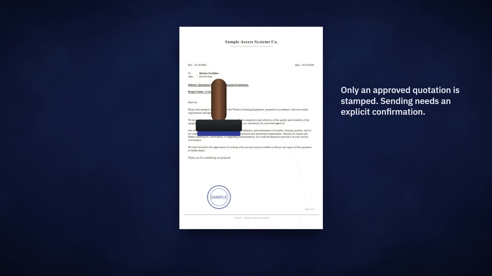
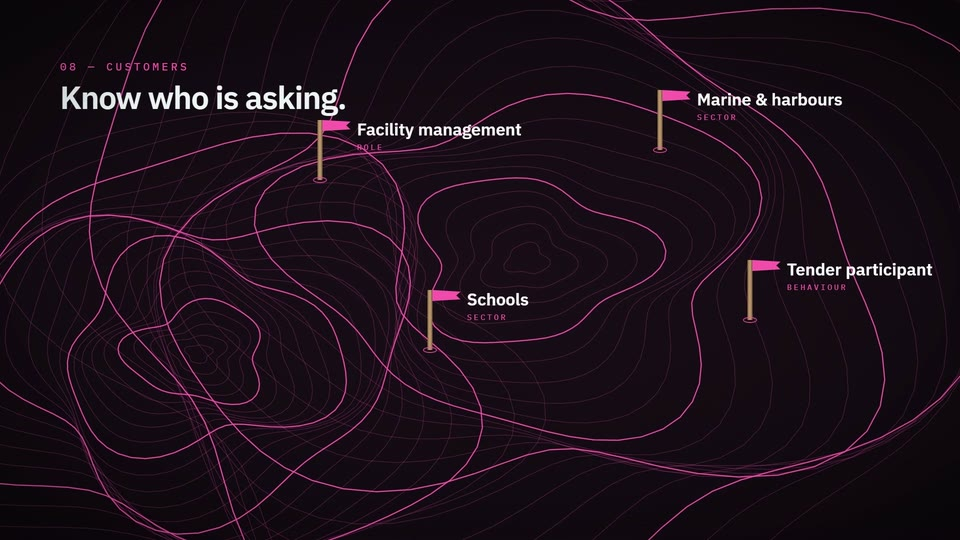
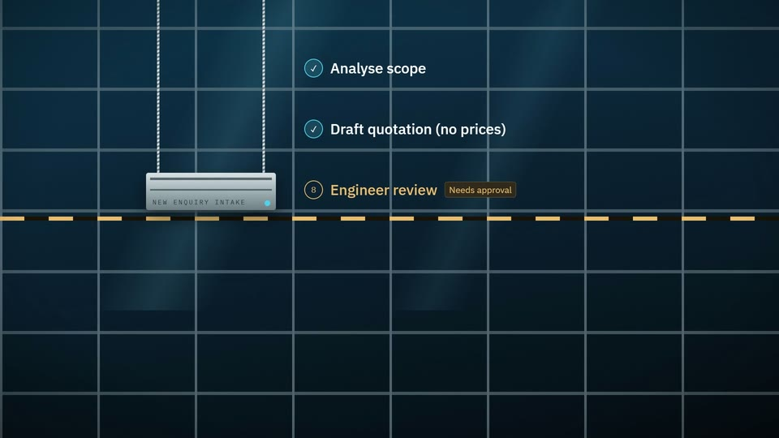
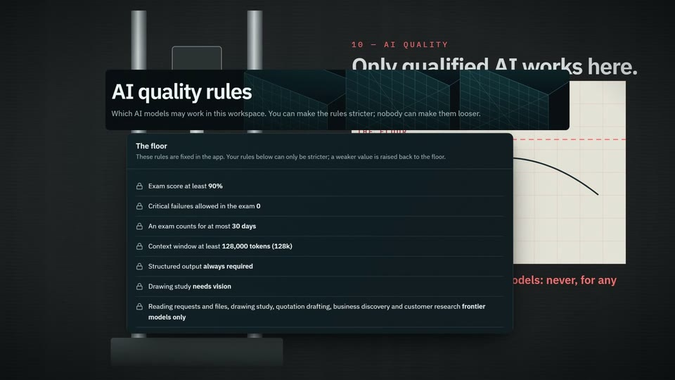
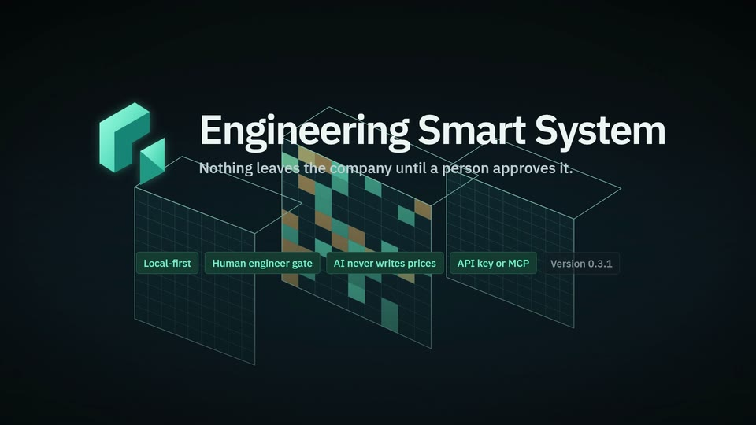

Your next decisions.
Home lists the work waiting for a person, each with its evidence and one next step.
Home lists the work waiting for a person, each with its evidence and one next step.
A tour of Engineering Smart System 0.3.1 in ten engineering materials, one real module each, filmed from the current app on sample data.
Home lists the work waiting for a person, each with its evidence and one next step.

It reads your mail and documents, suggests what you do, and waits for the owner to confirm.

Every message is filed by the business it belongs to; promotions stay hidden until you ask.

Each tender becomes one project, with an enquiry per contractor and dated, evidenced changes.

Downloaded, read and reviewed are separate facts for every file, and every requirement quotes its source.

A new revision reopens the engineering review, and every approval records the exact revision.

Official templates, empty price cells for people to fill, and a stamp only after approval.

Customer tags, research to a chosen evidence standard, and services they have not asked for yet.

Built-in workflows run step by step and stop wherever a person must approve.

Every AI model must meet a fixed floor and pass the qualification exam, through an API key or MCP.

Local-first: nothing leaves the company until a person approves it.